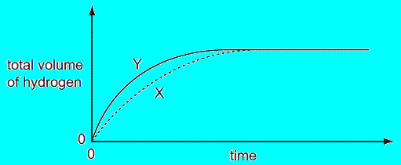
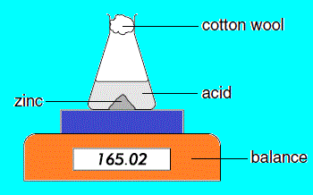
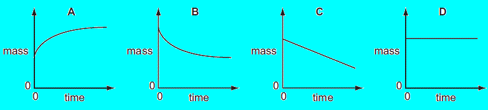
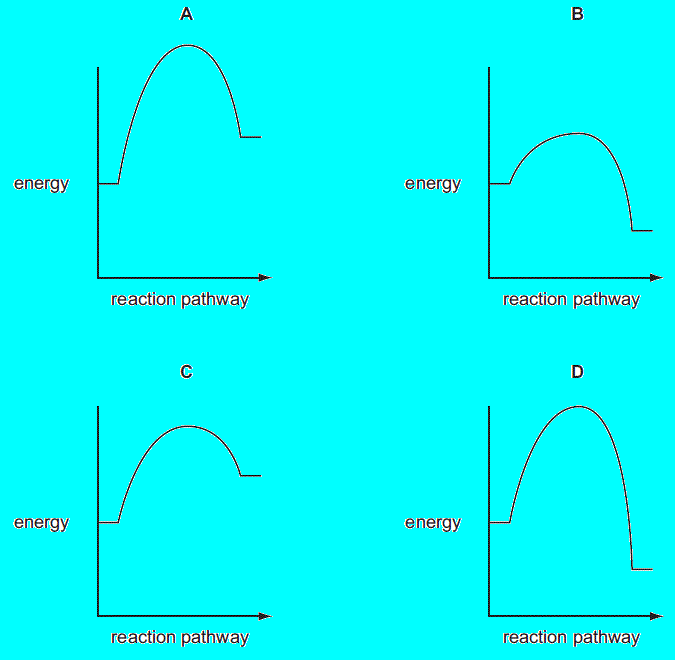

"kemguru" home page
RATE OF REACTION
Direction:
For each question
there are four possible answers A,B,C and D. Choose the one you consider correct , click the radio button next to it and then click the button "Check Answer ".
1.A solution of hydrogen peroxide releases oxygen slowly at room temperature.
hydrogen peroxide → water + oxygen
The diagrams show the effect of adding blood to the solution.
What could be the reason for the observed change?
2.The diagram shows a speed of reaction experiment.
Increasing the concentration of the acid and increasing the temperature both affect the speed of
reaction.
Which line of the table is correct?
|
increase concentration of acid |
increase temperature |
| A |
decrease speed of reaction |
decrease speed of reaction |
| B |
decrease speed of reaction |
increase speed of reaction |
| C |
increase speed of reaction |
decrease speed of reaction |
| D |
increase speed of reaction |
increase speed of reaction |
3.In different experiments, 2 g of marble are added to 10 cm3 of hydrochloric acid.
In which tube is the reaction fastest?
4.In an experiment using dilute acid and a metal, the speed at which hydrogen is released is
measured (curve X on graph).
The experiment is repeated but with one of the conditions changed (curve Y on graph).
Which line of the table is correct?

|
increase in concentration of acid |
increase in particle size of metal |
increase in temperature |
| A |
yes |
yes |
yes |
| B |
yes |
yes |
no |
| C |
yes |
no |
yes |
| D |
no |
yes |
yes |
5.Magnesium reacts with acids to produce hydrogen gas.
Under which set of conditions is hydrogen formed the most slowly?
|
magnesium |
acid |
temperature / C |
| A |
ribbon |
concentrated |
40 |
| B |
ribbon |
dilute |
20 |
| C |
powder |
concentrated |
40 |
| D |
powder |
dilute |
20 |
6.Which does not increase the speed of a reaction?
7.A student investigates the rate of reaction between marble chips and hydrochloric acid.
The loss in mass of the reaction flask is measured.
The graph shows the results of two experiments, P and Q.
Which change explains the difference between P and Q?
8.The apparatus shown can be used to measure the rate of some chemical reactions.
For which two reactions would the apparatus be suitable?
reaction 1: AgNO3(aq) + HCl (aq) → AgCl (s) + HNO3(aq)
reaction 2: 2H2O2(aq) → 2H2O(l) + O2(g)
reaction 3: MgO(s) + 2HCl (aq)→ MgCl2(aq) + H2O(l)
reaction 4: ZnCO3(s) + 2HCl (aq) → ZnCl 2(aq) + CO2(g) + H2O(l)
9.A student investigates the rate of reaction between magnesium and excess sulfuric acid.
The volume of hydrogen given off in the reaction is measured over time.
Which change in conditions would cause the difference between R and S?
10.The apparatus shown is used to measure the speed of a reaction.
Which equation represents a reaction where the speed can be measured using this apparatus?
11.A student investigates the speed of the reaction between a lump of zinc and an acid at room
temperature.
Which other item of apparatus does the student need for this experiment?

12.The solvent ethanol is produced by the fermentation of sugar, using yeast.
Which graph correctly shows how the speed of fermentation changes with temperature?
13.Why does the powdering of calcium carbonate increase the speed of its reaction with an acid?
14.Which piece of apparatus is essential to measure the speed of a reaction?
15.The mass of a beaker and its contents is plotted against time.
Which graph represents what happens when sodium carbonate reacts with an excess of dilute
hydrochloric acid in an open beaker?

16.Which changes of condition slow down the reaction between magnesium and air?
1: Heating the magnesium to a higher temperature
2: Using a higher proportion of oxygen in the air
3: Using magnesium ribbon instead of powdered magnesium
17.Which change does not increase the speed of reaction between zinc and hydrochloric acid?
18.Calcium carbonate was reacted with hydrochloric acid in a conical flask. The flask was placed on
a balance and the mass of the flask and contents was recorded as the reaction proceeded.
During the reaction, carbon dioxide gas was given off.
The reaction was carried out at two different temperatures.
Which row is correct?
|
change in mass |
temperature at which mass
changed more quickly |
| A |
decrease |
higher temperature |
| B |
decrease |
lower temperature |
| C |
increase |
higher temperature |
| D |
increase |
lower temperature |
19.An experiment to determine the rate of a chemical reaction could be carried out using the
apparatus shown.
Which reaction is being studied?
20.A student investigates the rate of reaction between zinc and an excess of sulfuric acid.
The graph shows the results of two experiments, X and Y.
Which change explains the difference between X and Y?
21.The equation shows the effect of heat on copper(II) carbonate.
CuCO3(s) → CuO(s) + CO2(g)
A known mass of copper(II) carbonate was placed in an open crucible and heated until no more
change occurred.
The mass of the crucible and contents was weighed every minute during the heating.
Which graph shows what happens to the mass of the crucible and contents?
22.Which reaction profile shows the fastest exothermic reaction?

23.In two separate experiments, a substance is decomposed and the gas evolved is collected.
The graph shows the total volume of gas collected against time for each experiment.

Which graph shows how the speed of reaction varies with time in each experiment?
24.A student adds marble chips to hydrochloric acid.The mass of flask and contents is measured at regular time intervals.
Which graph shows the result?